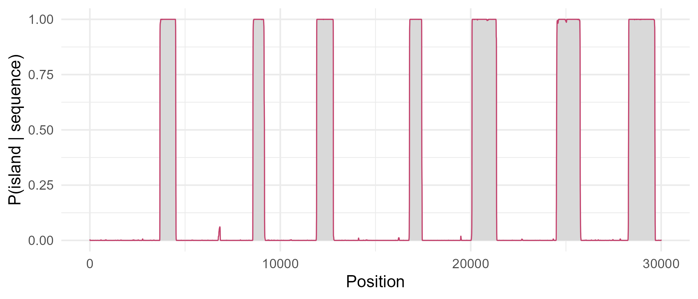

Module 10 · Lesson 10 of 13 Week 156 of 160 About 5–7 hours
Hidden Markov models for sequences
Finding CpG islands, and the algorithms behind gene finders
A genome alternates between regions with different composition, but the boundaries aren’t marked. Model it with a hidden Markov model: estimate its transition and emission probabilities from an annotated stretch, decode the most probable path with the Viterbi algorithm (by hand and with the HMM package), compute the sequence’s likelihood with the forward algorithm, get each base’s posterior probability of being in an island, and learn the parameters without annotation by Baum-Welch.
Genomes aren’t uniform. In vertebrates, most of the genome is poor in the dinucleotide CG, but stretches of a few hundred to a few thousand bases, CpG islands, are rich in C, G and CG, and they mark the starts of many genes. Finding them is a classic problem because their boundaries aren’t marked: the composition shifts gradually, and short random stretches can look island-like. The same problem, with more states, is gene finding: exons, introns and intergenic regions, each with its own statistics.
The tool is the hidden Markov model (HMM): a hidden sequence of states (island or background) that follows a Markov chain (Module 4), each state emitting bases with its own probabilities. We see the bases; we infer the states.
This lesson’s 30,000 bases are a fictional genome segment, simulated with islands at known positions (cpg_islands.csv), so that the methods can be checked against the truth.
Hidden Markov models power gene finders, speech recognition and the profile searches of Lesson 7. Today they hunt for islands in a sea of DNA.
In this lesson you’ll:
- set up a hidden Markov model with states, transitions and emissions
- estimate its parameters from an annotated sequence
- find the most probable state path with the Viterbi algorithm, by hand and with the HMM package
- compute the likelihood of a sequence with the forward algorithm
- compute posterior state probabilities, and see where the model is unsure
- learn the parameters from unannotated data with Baum-Welch
The setup code reads the sequence (as a vector of letters) and the islands, and builds the true state of every base.
Your turn. Compare the base composition inside and outside the islands.
Cross-tabulate truth with the bases.
print(table(truth))
round(prop.table(table(truth, x), 1), 3)23,161 background bases and 6,839 island bases (7 islands). The islands are 70.8% C and G, the background 39.5%: a big difference, but a short random stretch of background can easily reach 70% GC over 20 bases, so a base-by-base rule won’t work.
Your turn. First, the naive approach: call a base “island” if the GC content of the 200 bases around it is above 0.6, and measure the share of bases classified correctly.
The threshold is 0.6.
gc <- as.numeric(x %in% c("G", "C"))
win <- stats::filter(gc, rep(1 / 200, 200), sides = 2) # centred moving average
call <- ifelse(!is.na(win) & win > 0.6, "island", "bg")
c(accuracy = mean(call == truth), island_bases_found = mean(call[truth == "island"] == "island"),
false_island = mean(call[truth == "bg"] == "island"))98.6% of bases classified correctly, 94.1% of island bases found, and only 0.04% of background bases wrongly called island. Not bad, but the window blurs every boundary by up to 100 bases, and the threshold and window width are arbitrary. The HMM replaces both with probabilities.
The model
An HMM has:
- states, here background and island, forming a Markov chain with transition probabilities a_{kl} = P(\text{state } l \text{ next} \mid \text{state } k \text{ now}). A state with stay-probability a_{kk} lasts on average 1/(1 - a_{kk}) bases.
- emission probabilities e_k(b): the probability of base b in state k.
- start probabilities for the first state.
Your turn. Estimate the parameters from the annotation: the emission probabilities as each state’s base frequencies, and the transition probabilities from the number of switches.
Pair each base’s state with the next one: drop the first, truth[-1].
emis <- prop.table(table(truth, x), 1)
switches <- table(from = truth[-length(truth)], to = truth[-1])
trans <- prop.table(switches, 1)
list(emission = round(emis, 3), transition = trans, mean_island_length = 1 / trans["island", "bg"])The emission probabilities are the composition table above. The background stays background with probability 0.99970 (a switch every 3,309 bases on average) and an island stays island with probability 0.99898: islands last 977 bases on average. These are maximum likelihood estimates from labelled data; Baum-Welch (the challenge) estimates them without labels.
The Viterbi algorithm
The Viterbi algorithm (1967) finds the single most probable state path, by dynamic programming again (Lesson 4). Let v_k(i) be the probability of the best path for the first i bases ending in state k. Then
v_l(i + 1) = e_l(x_{i+1}) \max_k \big(v_k(i)\,a_{kl}\big),
remembering which k gave the maximum; the best final state, traced back, gives the path. Products of thousands of probabilities underflow, so it’s done with logarithms: products become sums.
Your turn. Run Viterbi by hand on the 18 bases ATATGCGCGCGCGCATAT with a toy model (staying probability 0.9 in both states).
The pointer for position i.
obs <- strsplit("ATATGCGCGCGCGCATAT", "")[[1]]
E <- rbind(bg = c(A = 0.3, C = 0.2, G = 0.2, T = 0.3), island = c(A = 0.15, C = 0.35, G = 0.35, T = 0.15))
A <- matrix(c(0.9, 0.1, 0.1, 0.9), 2, dimnames = list(c("bg", "island"), c("bg", "island")))
v <- matrix(NA, 2, length(obs), dimnames = list(rownames(E), NULL)); back <- v
v[, 1] <- log(0.5) + log(E[, obs[1]])
for (i in 2:length(obs)) for (l in 1:2) {
cand <- v[, i - 1] + log(A[, l]) # from each state k into l
v[l, i] <- log(E[l, obs[i]]) + max(cand); back[l, i] <- which.max(cand)
}
path <- integer(length(obs)); path[length(obs)] <- which.max(v[, length(obs)])
for (i in length(obs):2) path[i - 1] <- back[path[i], i]
paste(c("b", "I")[path], collapse = "")bbbbIIIIIIIIIIbbbb: background for ATAT, island for the ten bases GCGCGCGCGC, background again for ATAT. Switching state costs \log 0.1 each way instead of \log 0.9 for staying, while each G or C gains \log(0.35/0.20) in the island: ten of them pay for the two switches. With the twelve-base sequence ATATGCGCGCAT, only six GC bases, the best path stays in the background throughout: short GC runs aren’t worth a switch. That’s the transition probabilities doing what the window’s threshold did, but in a principled way.
Your turn. Build the model with the HMM package from the estimated parameters, and decode the whole 30,000 bases with viterbi().
viterbi(h, x).
emis <- prop.table(table(truth, x), 1)
trans <- prop.table(table(truth[-length(truth)], truth[-1]), 1)
h <- initHMM(States = c("bg", "island"), Symbols = c("A", "C", "G", "T"), startProbs = c(0.9, 0.1),
transProbs = unclass(trans), emissionProbs = unclass(emis))
path <- viterbi(h, x)
c(accuracy = mean(path == truth), island_found = mean(path[truth == "island"] == "island"),
false_island = mean(path[truth == "bg"] == "island"))99.66% of bases decoded correctly, 99.4% of island bases found, and 0.28% of background bases called island: better than the window rule on every count, and with no tuning, just the estimated parameters.
Your turn. Turn the decoded path into islands (runs of “island”), and compare their starts with the true islands’.
The runs whose value is "island".
emis <- prop.table(table(truth, x), 1)
trans <- prop.table(table(truth[-length(truth)], truth[-1]), 1)
h <- initHMM(c("bg", "island"), c("A", "C", "G", "T"), c(0.9, 0.1), unclass(trans), unclass(emis))
path <- viterbi(h, x)
r <- rle(path)
ends <- cumsum(r$lengths); starts <- ends - r$lengths + 1
pred_start <- starts[r$values == "island"]
c(n_predicted = length(pred_start), n_true = nrow(isl), mean_start_error = mean(abs(pred_start - isl$start)))7 predicted islands for 7 true ones, with starts off by 7.4 bases on average. Boundaries are where all methods disagree, because the composition change is gradual on the scale of a few bases.
Forward and posterior
The forward algorithm replaces Viterbi’s maximum by a sum: f_l(i+1) = e_l(x_{i+1}) \sum_k f_k(i)\,a_{kl}, so \sum_k f_k(n) is the probability of the whole sequence under the model, summed over every possible path. To avoid underflow without logarithms of sums, the forward variables are rescaled at each step to sum to 1, and the logs of the scaling factors add up to the log-likelihood.
Your turn. Write the scaled forward algorithm and compare its log-likelihood with the HMM package’s forward().
Rescale by the sum, s.
emis <- prop.table(table(truth, x), 1)
trans <- unclass(prop.table(table(truth[-length(truth)], truth[-1]), 1))
f <- c(0.9, 0.1) * emis[, x[1]]; ll <- log(sum(f)); f <- f / sum(f)
for (i in 2:length(x)) {
f <- emis[, x[i]] * as.vector(f %*% trans) # sum over the previous state
s <- sum(f); ll <- ll + log(s); f <- f / s
}
h <- initHMM(c("bg", "island"), c("A", "C", "G", "T"), c(0.9, 0.1), trans, unclass(emis))
fw <- forward(h, x); last <- fw[, length(x)]
c(by_hand = ll, hmm_package = max(last) + log(sum(exp(last - max(last)))))-40{,}533.13 both ways. The scaling trick is how the HMM package’s forward() avoids underflow too (it returns log forward variables), and it’s how gene finders handle chromosomes of millions of bases.
Combining the forward algorithm with its mirror image, the backward algorithm, gives each base’s posterior probability of being in each state, given the whole sequence: P(\pi_i = k \mid x). Viterbi gives one best path; the posterior says how sure the model is at each position.
Your turn. Compute the posterior probabilities with posterior(), and count the bases where the model is unsure (posterior of island between 0.1 and 0.9).
The island row: "island".
emis <- prop.table(table(truth, x), 1)
trans <- prop.table(table(truth[-length(truth)], truth[-1]), 1)
h <- initHMM(c("bg", "island"), c("A", "C", "G", "T"), c(0.9, 0.1), unclass(trans), unclass(emis))
post <- posterior(h, x)["island", ]
c(mean_in_islands = mean(post[truth == "island"]), mean_outside = mean(post[truth == "bg"]),
unsure_bases = sum(post > 0.1 & post < 0.9))The posterior probability of island averages 0.993 inside the true islands and 0.004 outside, and 230 bases (less than 1%) have a posterior between 0.1 and 0.9: they’re at the islands’ edges. The plot below shows how sharp the boundaries are, and where the model hesitates.

Your turn. How much better does the HMM explain the sequence than a model with a single composition everywhere? Compute the log-likelihood ratio.
Look up each base’s probability: p_all[x].
emis <- prop.table(table(truth, x), 1)
trans <- unclass(prop.table(table(truth[-length(truth)], truth[-1]), 1))
h <- initHMM(c("bg", "island"), c("A", "C", "G", "T"), c(0.9, 0.1), trans, unclass(emis))
last <- forward(h, x)[, length(x)]
ll_hmm <- max(last) + log(sum(exp(last - max(last))))
p_all <- prop.table(table(x))
ll_one <- sum(log(p_all[x])) # every base independently, one composition
c(hmm = ll_hmm, one_state = ll_one, log_ratio = ll_hmm - ll_one)A log-likelihood of -40{,}533 for the HMM against -41{,}520 for a single composition: a log-likelihood ratio of 986. For six extra parameters (a second set of three free emission probabilities, two transition probabilities and a start probability), that’s overwhelming evidence that the sequence has two kinds of region.
NoteGo deeper: real CpG models and gene finders
The two-state model here emits each base independently, so it sees only composition. Durbin and others’ classic CpG model has eight states (A+, C+, G+, T+ in islands and A−, C−, G−, T− outside), so that transitions between states encode dinucleotide frequencies, and the CG step itself carries information; a CpG island is then a run of “+” states. Gene finders like GENSCAN and AUGUSTUS use generalized HMMs, in which each state emits a whole segment (an exon, an intron) with an explicit length distribution, and emissions model codon structure, splice-site motifs and start and stop codons. The algorithms stay Viterbi, forward-backward and Baum-Welch, generalized. Richard Durbin and others, Biological Sequence Analysis (Cambridge, 1998), chapter 3, and Christopher Burge and Samuel Karlin, “Prediction of complete gene structures in human genomic DNA”, Journal of Molecular Biology 268, 1997 (GENSCAN).
Challenge round
Challenge 1 · Learning without labels. Usually there’s no annotation. The Baum-Welch algorithm (an EM algorithm, Module 4, Lesson 10) estimates the parameters from the sequence alone: compute the posterior expected transitions and emissions, update the parameters, repeat. Start from nearly uniform emissions and run 5 iterations on the first 10,000 bases.
5 iterations.
x10 <- x[1:10000]
h0 <- initHMM(c("bg", "island"), c("A", "C", "G", "T"), startProbs = c(0.5, 0.5),
transProbs = matrix(c(0.999, 0.001, 0.001, 0.999), 2, byrow = TRUE),
emissionProbs = matrix(c(0.26, 0.24, 0.24, 0.26, 0.24, 0.26, 0.26, 0.24), 2, byrow = TRUE))
bw <- baumWelch(h0, x10, maxIterations = 5)
round(bw$hmm$emissionProbs, 3)From nearly uniform starting values, 5 iterations recover a background of 30.2% A, 20.3% C, 19.9% G and 29.7% T and islands of 14.3% A, 36.8% C, 35.8% G and 13.1% T, close to the true values, without being told where a single island is. Baum-Welch can converge to a local maximum, so in practice it’s run from several starting points, and its states have no names: here the second state became the island because the starting values leaned that way.
Challenge 2 · Dinucleotides. In RStudio, compute the CG dinucleotide’s observed-to-expected ratio (Lesson 3) inside and outside the true islands. The simulation emitted bases independently, so both should be near 1; in real vertebrate DNA, the background ratio is about 0.2 and the islands’ about 0.6 to 1. How would you change the model to use that signal?
Quick quiz
1. In an HMM, what’s hidden?
We observe the emissions and infer the states.
2. A state with a stay-probability of 0.999 lasts on average:
1/(1 - 0.999): the length is geometric.
3. The Viterbi algorithm finds:
Forward gives the probability, forward-backward the posteriors.
4. Why work with logarithms or scaling?
0.25^{30000} is far below the smallest representable number.
5. A posterior probability of 0.5 at a base means:
Typical at island boundaries.
6. Baum-Welch is:
It can converge to local maxima, so starting values matter.
Wrap-up
You’ve hunted islands with a hidden Markov model. Here’s what you’ve learned:
- An HMM has hidden states in a Markov chain, transition probabilities and emission probabilities; the islands here are 70% C and G against 40% in the background.
- A sliding window finds islands crudely (accuracy 98.6%); Viterbi decoding gets 99.7% of bases right and finds all 7 islands, with boundaries off by a few dozen bases.
- The forward algorithm gives the sequence’s log-likelihood (by hand and with the package, the same); the HMM explains the sequence far better than a single composition.
- Posterior decoding shows where the model is unsure: at the boundaries.
- Baum-Welch learns the parameters from the sequence alone.
TipPractice in RStudio (optional, about an hour)
Download genome_segment.fasta and cpg_islands.csv into your project’s data-raw/ folder, and install HMM.
- Simulate. Use
simHMM()to simulate 30,000 bases from the estimated model, and plot the run lengths of each state. Are they geometric? - Sensitivity to the transitions. Decode with transition probabilities ten times larger and ten times smaller than estimated. How do the predicted islands change?
- The eight-state model. Build Durbin’s eight-state CpG model with the aphid package, or by hand, and decode the sequence with it.
- A real island. Download 50 kb around the human GAPDH gene from Ensembl, and run your model (estimate background and island compositions from the literature). Does it find the island at the gene’s start?
NoteKey words from this lesson
- Hidden Markov model (HMM)
- A model with hidden states following a Markov chain, each emitting observations with its own probabilities.
- Transition and emission probabilities
- The probabilities of moving between states, and of each observation in each state.
- CpG island
- A region rich in C, G and CG dinucleotides, often at the start of a gene.
- Viterbi algorithm
- Dynamic programming for the most probable state path.
- Forward algorithm
- Dynamic programming for the probability of the observations, summed over all paths.
- Posterior decoding
- Each position’s probability of each state given the whole sequence, from the forward-backward algorithm.
- Baum-Welch algorithm
- The EM algorithm for an HMM’s parameters.
NoteWant to read more?
- Richard Durbin, Sean Eddy, Anders Krogh and Graeme Mitchison, Biological Sequence Analysis (Cambridge, 1998), chapter 3, “Markov chains and hidden Markov models”, with CpG islands as the running example.
- Lawrence Rabiner, “A tutorial on hidden Markov models and selected applications in speech recognition”, Proceedings of the IEEE 77, 1989, pages 257 to 286, the classic tutorial.
- Susan Holmes and Wolfgang Huber, Modern Statistics for Modern Biology (free online), chapter 2, on Markov chain models of DNA.